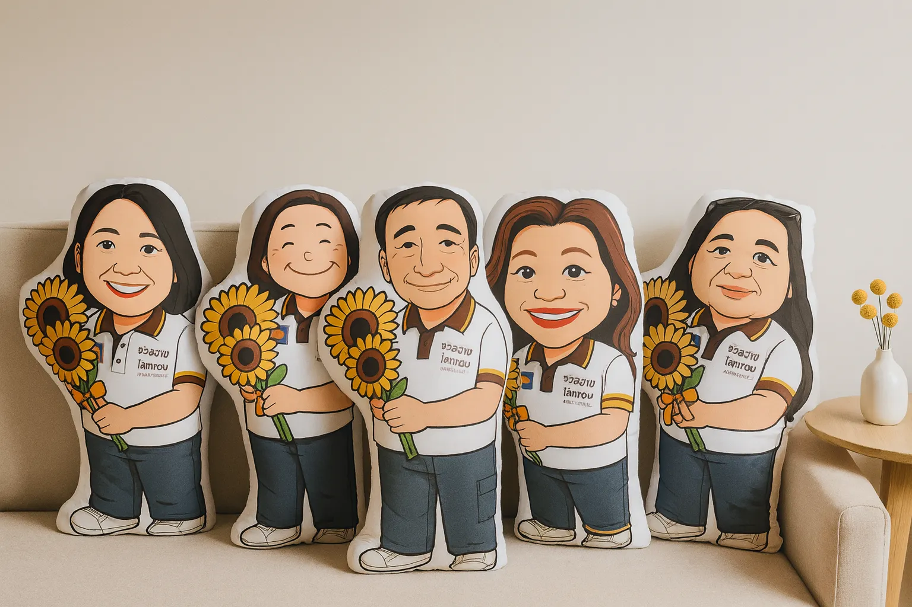
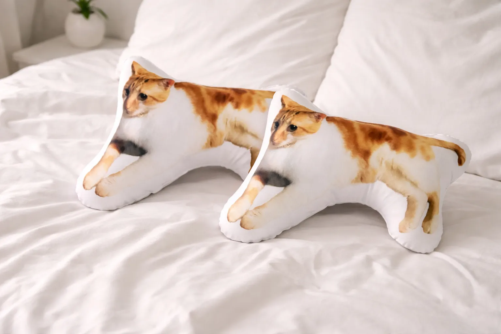
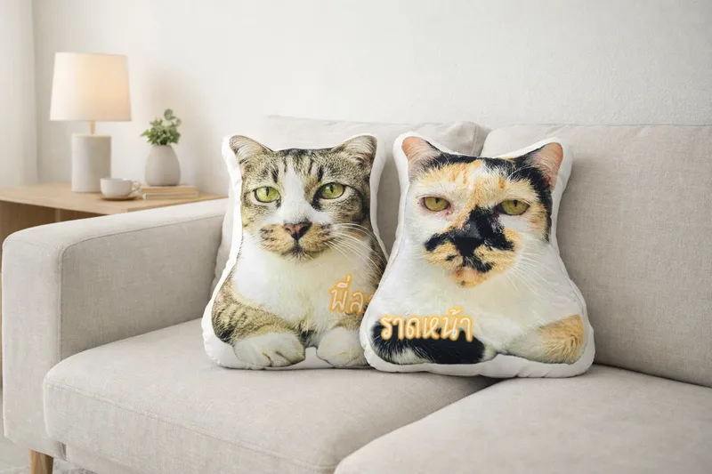
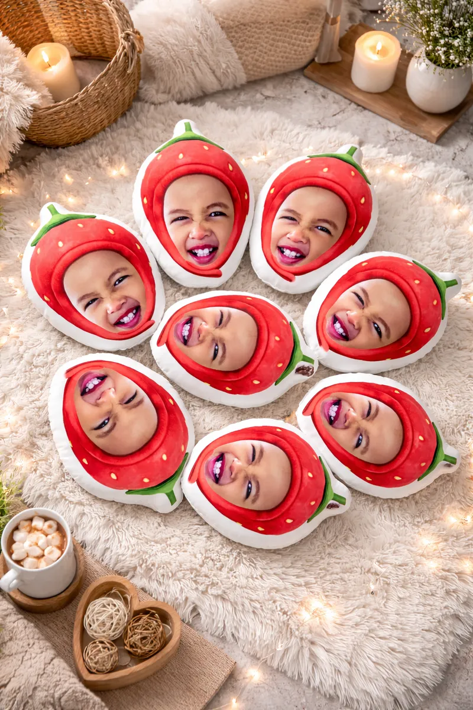

หมอนไดคัทคือหมอนที่ตัดเย็บตามรูปทรงของคนหรือสัตว์เลี้ยงในรูปถ่าย ทำเป็นหมอนหน้าคน หมอนหน้าตัวเอง หรือหมอนรูปน้องหมาน้องแมวก็ได้ เหมาะเป็นของขวัญวันเกษียณ รับปริญญา วันเกิด ตัดเย็บตามรูปทรง ยัดใยสังเคราะห์นุ่มเต็มใบ มีซิปปิดที่ก้นเก็บงานแบบเนียน ๆ เราส่งแบบให้ดูก่อนผลิตทุกชิ้น ผลิตเสร็จใน 3–4 วันค่ะ

*ขนาดคือพื้นที่พิมพ์ ชิ้นงานจริงรวมขอบขาวจะเล็กลงประมาณ 1 นิ้ว · สั่งจำนวนมากมีราคาส่ง
สั่งทำหมอนไดคัททาง LINE




ไดคัทเต็มตัว — ตัดตามรูปทรงทั้งตัวตั้งแต่หัวจรดเท้า เหมาะกับรูปที่เห็นท่าทางชัด เช่น ชุดเครื่องแบบ ชุดครุย หรือท่ายืนถือของ ได้อารมณ์เหมือนย่อส่วนคนจริงมาตั้งไว้ นิยมมากสำหรับของขวัญวันเกษียณและรับปริญญา
ไดคัทครึ่งตัวหรือเฉพาะหน้า — เน้นใบหน้าให้ใหญ่เต็มใบ เห็นรอยยิ้มชัด เหมาะกับรูปสัตว์เลี้ยงและเด็กเล็ก หรือทำเป็นทรงพิเศษอย่างสตรอว์เบอร์รี่และหัวใจก็ได้
เลือกรูปยังไงให้งานออกมาสวย — ใช้รูปที่หน้าชัด แสงเพียงพอ และเห็นตัวครบส่วนที่ต้องการตัด ถ่ายจากมือถือได้เลยไม่ต้องใช้กล้องใหญ่ ทีมงานตัดพื้นหลังและจัดไฟล์ให้ฟรี ถ้ารูปไหนไม่เหมาะเราจะแนะนำก่อนเริ่มงาน ไม่ปล่อยผ่านค่ะ
ตัวหมอนยัดใยสังเคราะห์แน่นนุ่มทั้งใบ เก็บงานด้วยซิปซ่อนที่ก้นแบบเนียน ๆ มองแทบไม่เห็นรอยต่อ
ได้ค่ะ ไม่มีขั้นต่ำ สั่ง 1 ใบก็ผลิตให้ สั่งหลายใบมีราคาส่งค่ะ
หมอนไดคัทยัดใยในตัว มีซิปปิดที่ก้น แต่ไม่แนะนำถอดซักค่ะ ให้เช็ดทำความสะอาดด้วยผ้าหมาดเฉพาะจุด สีสกรีนคมชัด ไม่ลอกค่ะ
ได้ค่ะ ส่งรูปที่ชัดที่สุดที่มีมาทางไลน์ เราตัดพื้นหลัง จัดไฟล์ และส่งแบบให้ดูก่อนผลิตทุกชิ้นค่ะ
ผลิต 3–4 วันหลังยืนยันแบบ แจ้งวันจัดส่งชัดเจนตั้งแต่ยืนยันออเดอร์ งานด่วนทักไลน์มาคุยได้ค่ะ
ตอบไวทุกวัน แจ้งราคาและวันส่งชัดเจนก่อนผลิตค่ะ
แอด LINE @aunirakgift